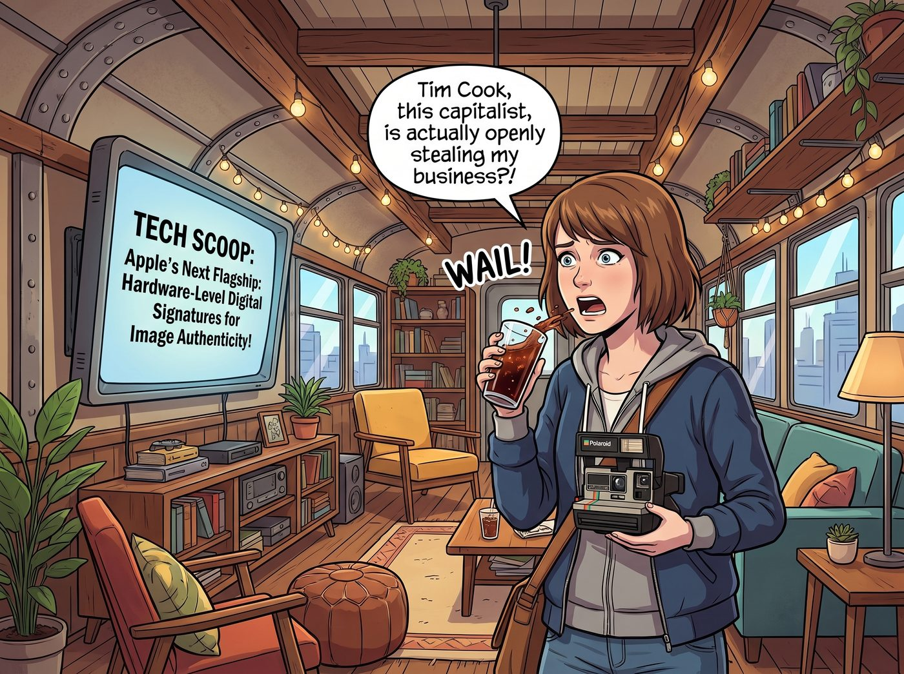
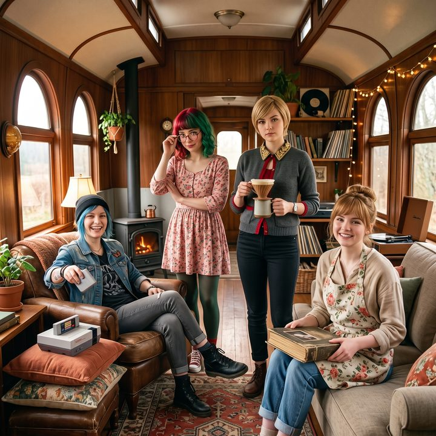

底片的存在危機


當二號車廂的主螢幕上彈出這則來自科技媒體的最新爆料——蘋果新一代旗艦機型將導入硬體級別的影像真實性數位簽章時，Max 剛喝進嘴裡的可樂差點噴在螢幕上。
「Tim Cook 這個資本家，居然公然搶我的生意？！」Max 抱著她那台老舊的寶麗來相機，發出了震驚且委屈的哀嚎，「我們前幾天去偷拍 Apex 物流的時候，Lily 才說過法庭不接受數位照片是因為怕AI造假，只有我的底片擁有最高級別的證據效力！現在蘋果把這條路堵死了？！」
一、降維的技術性狙擊
坐在工作台前的實習生 Lily 迅速點開了那篇報導，大眼睛裡閃爍著對矽谷底層代碼的狂熱。
「Max 學姐，您遇到了降維的技術性狙擊。」Lily 推了推反光的圓框眼鏡，用她那軟糯的聲音開始了無情的技術拆解：「根據爆料，蘋果打算在新機的影像訊號處理器底層，直接寫入硬體級別的加密簽章。這意味著，當光子打在感光元件的那個瞬間，手機就會生成一份不可篡改的內容出處與真實性數位憑證。它能向法官證明：這張照片是真實拍攝的，絕對沒有經過AI生成或修改。」
「所以……我的寶麗來底片，在提供物理證據這個領域，被一部智慧型手機徹底淘汰了？」Max 絕望地癱倒在沙發上，感覺自己的核心競爭力被矽谷無情地碾碎了。
「哈！別聽那些矽谷暴發戶吹牛。」Chloe 一把將遊戲機扔在一邊，走過來拍了拍 Max 的肩膀，街頭霸王的眼中滿是對大科技公司的不屑。「Maxine，妳用的是化學，他們用的是代碼。妳問問我們的小惡魔，她能不能黑掉那個什麼蘋果的硬體簽章？」
眾人齊刷刷地看向 Lily。
Lily 乖巧地雙手交疊，微微搖了搖頭：「這種硬體晶片層級的加密簽章，燒錄在生產階段就已經完成物理固化，理論上要突破它，需要的是對方晶圓廠等級的製程逆向工程，這已經遠遠超出我單靠伺服器算力和軟體攻防能碰觸的範疇了。老實說，我不會浪費時間去嘗試這種投入產出比極低的硬體級對抗。」
二、絕對物理隔離的優勢
Lily 停頓了一下，目光落在了 Max 懷裡那台寶麗來相機上，語氣變得極度認真：「但是，Max 學姐，您的寶麗來底片是絕對物理隔離的。顯影劑與鹵化銀的化學反應是不可逆的熱力學過程。在這個世界上，沒有任何代碼、也沒有任何硬體簽章系統，能夠回頭『駭入』一張已經顯影的實體底片。在真正需要絕對可信度的場合，實體底片依然是唯一不受數位攻防影響的冷儲存證據。」
Max 的眼睛重新亮了起來：「所以……我還沒失業？」
「不僅沒有失業，妳的資產還升值了。」Victoria 端著手沖咖啡，優雅地走了過來。她那雙看透了資本市場的眼睛裡，帶著一絲精明：「Price 說得對，蘋果的這項技術只是為了應付普通人的AI恐慌。但在我們老錢階級和頂級藝術品市場看來，數位簽章依然是廉價的位元組。Max，妳那些過期二十年的底片，因為化學藥劑衰退而產生的獨特偏色、漏光，和不可複製的瑕疵，才是真正的奢侈品。演算法越是追求完美的真實，人們就越是願意為這種物理的、唯一的、帶有時間溫度的瑕疵買單。」
Victoria 高傲地揚起下巴：「Tim Cook 只是量產了真實，而妳，Maxine，妳掌握的是限量版的不可複製性。」
三、無法被取代的溫度
這時，Kate 繫著圍裙，拿著一本厚厚的相冊走了出來。那是她用來收集大家平時生活點滴的實體相冊。
「而且呀，數位照片是冷冰冰的。」小天使溫柔地翻開相冊，裡面貼著 Max 之前給每個人拍的存檔點單人照，以及那張大家穿著動物連體衣的滑稽全家福。「手機裡的照片，輕輕一滑就不見了。但是底片可以拿在手裡，可以聞到相紙的味道，可以在背後寫字。當我們老了，就算所有的伺服器都斷電了，我們依然可以坐在爐火旁，摸著這些照片回憶現在的瘋狂呢。」
Kate 抬起頭，對著 Max 露出了一個充滿聖光的微笑：「所以，Max 的魔法，是任何高科技都無法取代的呀。」
四、重獲新生的戰士
聽完這三個人從駭客物理學、資本奢侈品學，以及神聖情感學三個維度對底片絕對不可替代性的論證，Max 徹底被打了一劑強心針。
「去他的新款iPhone！」Max 興奮地從沙發上跳了起來，像個重獲新生的戰士一樣舉起了寶麗來，對準了這三個剛剛拯救了她職業危機的室友。
「來！為了慶祝碳基生物和化學顯影的偉大勝利，大家看鏡頭！Chloe，不准再擺那個驚恐的酸黃瓜臉了！」
「咔嚓——嗡。」伴隨著快門聲和機械齒輪的轉動，一張帶有真實溫度、絕對無法被駭客篡改、也無法被蘋果取代的實體底片，緩緩地吐了出來，成為了二號車廂又一個永恆的物理存檔點。